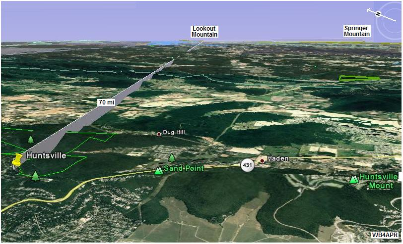
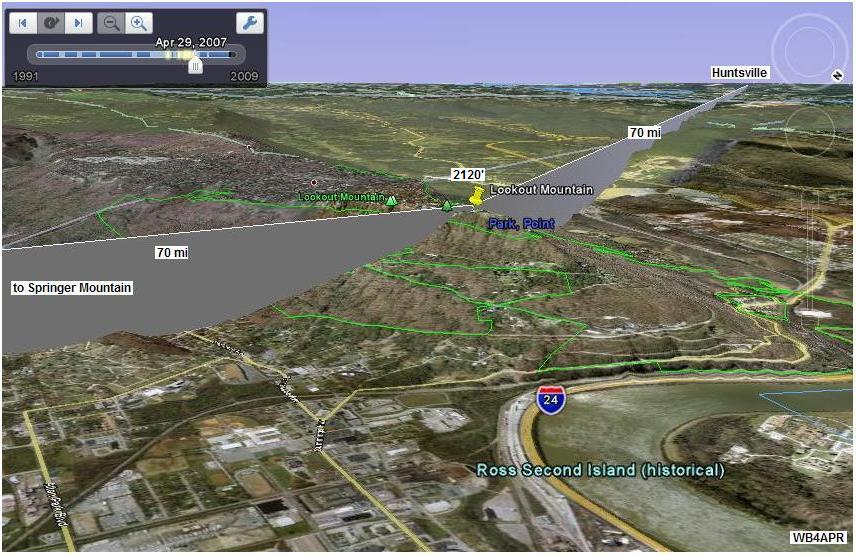
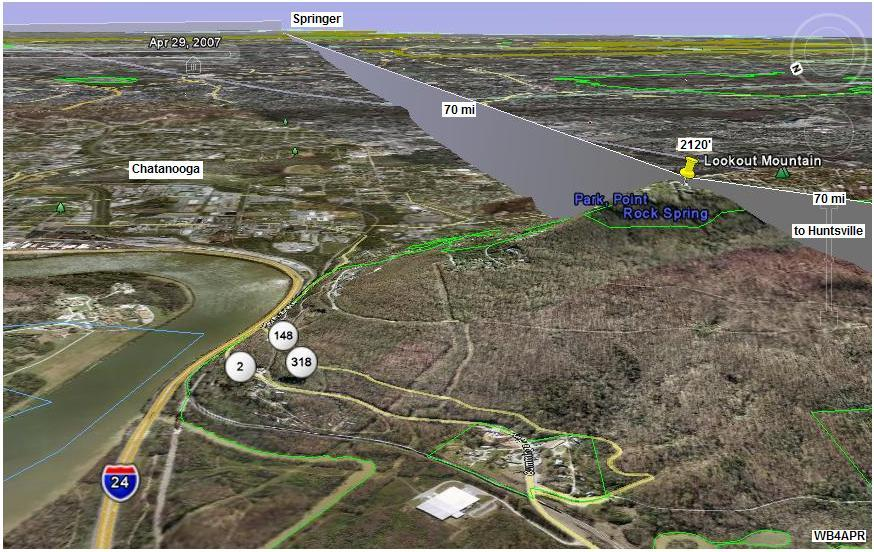
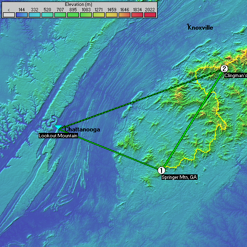
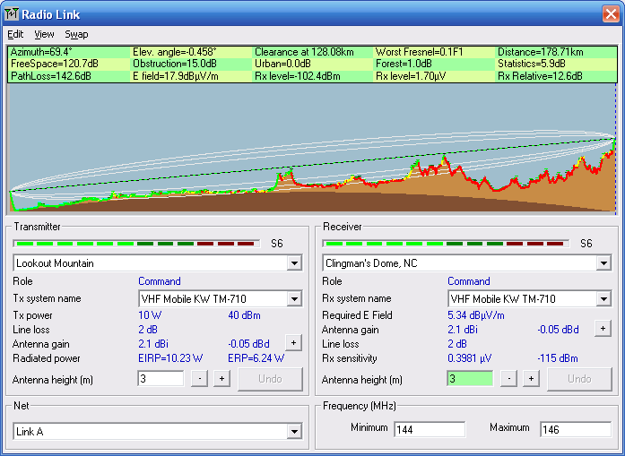

Lookout Mtn & Huntsville Secondary Links
Lookout Mtn & Huntsville Secondary Links
Lookout Mtn & Huntsville Secondary Links2012 Planning: Don, W6GPS is going to take a shot at Lookout Mountain with is combined D710 and AVMAP G6 GPS. We have not heard of anyone going to Huntsville. But there will be other stations maybe on Swanee Mountain and possibly Stone Mountain?
2010/2011 not manned. Don, WA4YYM from Cleveland, TN were not available for Lookout Mountain, nor was Tim Cunningham N8DUE for Huntsville.
2009 Report: Success! See the report from 2009
See the Golden Packet plan. . Lookout Mountain and Huntsville mountains are two more opportunites to go mountain topping during our 6 hour 24 July 2011 Golden Packet test from Georgia to Maine as we attempt to relay a text message using hand-held radios the 2000 mile length of the Appalachain trail. Other hikers equipped with APRS ham radios are welcome to participate and these secondary links can help extent the experience over most of the Eastern states. Huntsville Alabama is about the farthrest south and west end of the Appalachain Mountains. It can be linked to the south end of the Appalachain Trail packet experiment (Springer Mountain) via a link site on Lookout Mountain in Chatanooga, Tennessee. Huntsville is an active APRS area and enjoys a good APRS network. W4GPS-7 currently provides mountain top coverage in the area..
CALLSIGN: . . . . . . . . . . . HTSVLE-1 and LKOUT-1
ALTITUDE: . . . . . . . . . . . ???? feet
POSITION:. . . . . . . . . . . . Huntsville: 34-45 N / 86-35W
. . . . . . . . . . . . . . . . . . . . . . Lookout Mountain: 35Ý 0'18.24"N / 85Ý 20'38.98"W
LINK NORTHEAST: . . . Springer Mountain via Lookout Mountain
. . . . . . . . . . . . . . . . . . . . . . Clingmans Dome via Lookout Mountain
VOICE REPEATERS:. . . 146.79- on Lookout Mountain.
ECHOLINK NODE: . . . . . 73301 (WA4YYM)
DIGIPEATERS: . . . . . . . . W4GPS-7 on Green Mountain near Huntsville
TEAM LEADER: . . . . . . Huntsville - Tim Cuningham N8DUE (2009)(not avail in 2010)
. . . . . . . . . . . . . . . . . . . . . . Lookout Mountain - Don WA4YYM (2009)(not avail in 2010!)

COMMENTS: . SECONDARY DIGIPEATERS: These secondary links allow additional RF participation throughout the 13 states and more of the AT by relaying the actual Golden Packet event outward from the trail in favorable directions. For example, the path from Springer Mountain over to Lookout Mountain in Chatanooga and from there on to Huntsville Aolabama should work fine.
On those peaks, a secondary digipeater can be set up for the event that has an INPUT only on the EVENT channel, and an output on some secondary LOCAL frequency. This secondary digipeater will carry the full load of the long haul golden packet event, but will not add any QRM, because its output is on a different frequency. Creative neworks can be established radiating outward anywhere on the trail as long as ALL such packets are *NOT* on the main event channel. Using these paths, those areas are able to participate and to demonstrate their ability to join the long-haul emergency network in time of disaster.
The goal of this event is to break the mold of Field Day and VHF contesting and do something different. To test and demonstrate our ability to build an instant ad-hoc linear network using APRS (or packet) for long-haul RF digital communications. The view below shows the path from Lookout Mountain to Huntsville.

The next view shows the path from Lookout Mountain to Springer Mountain. This path is a one-way path this year so that Chatanooga and Huntsville can monitor the AT Golden Packet event without adding any channel QRM. But it is a good test run for the next year, when we will activate all Secondary Links.

As you can see, Lookout Mountain is an easy Drive-up mountain and the RF paths are well known because of the multiple Amateur Radio repeaters already up there. The XXXXX APRS digi is also active from that location. As you can see below, Lookout Mountain also has a chance of hitting Clingman's direct.

PATH TO CLINGMAN'S DOME: It turns out that Lookouit Mountain has a possible path directly to Clingman's dome with abotu 12 dB margin. So it may not need to digipeat via Springer. See the path plot below by John Higgins.

Bob, WB4APR
See my other GENERAL page on APRS applications and Ideas on the AT
Return to the APRS HOMEPAGE or SiteMap.